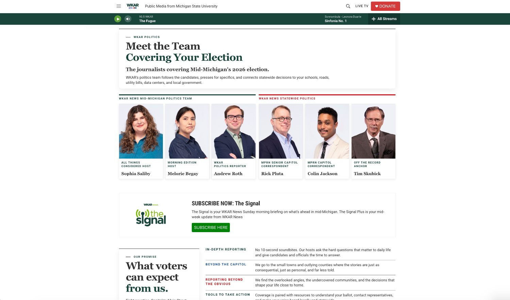
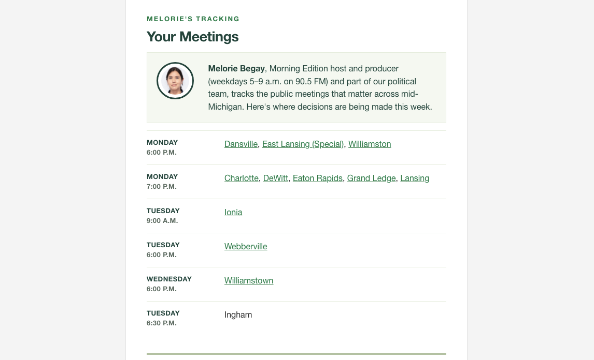
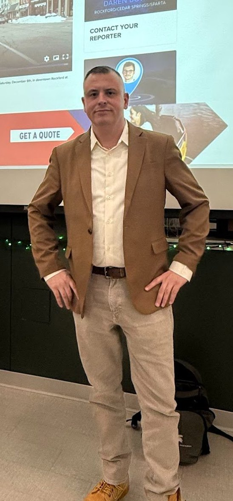

The operating side of the job
The newsroom is the product.
Strong editorial operations are built around people, ownership and systems. Every number on this site traces back to who was hired, what they were coached to do, and whether the operation gave them room to lead. At WKAR that has also meant making journalists’ names, beats and expertise more visible to the audience.
I know how to help the people I lead become leaders themselves, and to build around the strengths that make their work distinctive.

30+
Employees recruited, hired and onboarded during my tenure at CBS News Miami
100+
Employee operation I helped oversee as assistant news director in a top-15 market
MSU
Capitol News Service class brought into the newsroom, their reporting running in WKAR coverage and the students on our broadcasts as story experts
New
Freelance reporter system, implemented when I arrived at WKAR
The front door
The people the audience follows.
A mix of full-time staff and freelance contributors, each with clear beats and ownership. Making their expertise visible strengthens both the journalism and the connection with audiences. These are products as published: the bylines, faces and beats show how subject-matter expertise becomes part of the audience experience.




Running it
Hiring, coaching, capacity.
A freelance reporter system
I implemented a freelance reporter system when I arrived. It helped protect coverage capacity after federal funding cuts and created a repeatable model for adding expertise when needed.
Coaching frameworks
Hiring pipelines, written coaching frameworks and section ownership. I develop reporters into beat leaders who bring judgment and initiative to the work.
Remote and hybrid
I manage a distributed workforce through structured asynchronous workflows: written standards, clear ownership, and rundowns that survive people working in different places.
Atmosphere
Newsrooms run on morale. I create environments with clear expectations, trust and room for people to grow.
The student pipeline
I develop early-career journalists.
I brought Michigan State’s Capitol News Service class into the newsroom and built their work into our coverage. Their state government reporting ran on WKAR, and during the semester the students came on our broadcasts as story experts on the bills and budgets they were covering.
I have guest lectured at Michigan State in the TV News Producing and Reporting course: editorial judgment, rundown construction, story framing and multiplatform execution.

I know how to help the people I lead become leaders themselves.